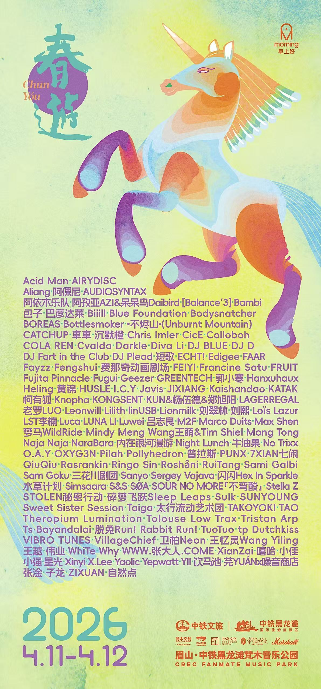

2026
2026年，春游好像进入了一个更加稳定的阶段。
每天大约有一万人来到这里。七个不同的表演区域，一百多组来自不同地方的音乐人和艺术家，音乐从白天一直持续到夜晚。但和以前相比，真正发生变化的，好像已经不只是数字了。
舞台慢慢稳定下来，每一个区域也开始有了自己的性格。春游舞台、维他命舞台、想象力舞台、早上好舞台、嬉春林、回响舞台和过载空间，它们不再只是几个同时发生演出的地方，而是慢慢变成了春游里面不同的世界。
人们也越来越熟悉怎么在这里度过这两天。有人一直待在一个舞台前，有人从下午走到凌晨，也有人几乎没有认真看过一场完整的演出，只是在不同的地方不断遇见朋友。
舞台也比以前更加完整。站在现场的时候，我们偶尔还是会想起很多年前，那个在农家乐院子里，由一些朋友一起搭起来的春游。
那时候当然不会想到，有一天，每天会有一万人来到这里。
但很奇怪，当春游真的变得越来越大，我们最想保留下来的，反而还是最开始那件很简单的事情——让大家在春天里见面。
2026年的春游，更大了，也更完整了。
但希望它一直都还是春游。
In 2026, CHUNYOU seemed to enter a more settled stage of its life.
Around ten thousand people came each day. Seven different performance areas, more than a hundred musicians and artists from different places, and music running from daytime into the night. But compared with the years before, the biggest change was no longer simply about numbers.
The stages had gradually settled into themselves, and each space was developing its own character. The CHUNYOU Stage, Vitamin Stage, Imagination Stage, Morning Stage, Spring Jamming, Echo Stage, and Noise Space were no longer simply different places where performances happened. They were slowly becoming different worlds within CHUNYOU.
People had also become familiar with how they wanted to spend these two days. Some stayed in front of one stage, some wandered from afternoon until early morning, and some barely watched a complete performance at all, simply moving around and running into friends.
The stages felt more complete. Standing somewhere in the middle of it all, we would sometimes think back to the CHUNYOU of many years ago—a small gathering built together by a group of friends in the courtyard of a farmhouse.
Back then, we could never have imagined that one day ten thousand people would come here every day.
But strangely, the bigger CHUNYOU becomes, the more we want to hold on to the simplest thing that was there from the very beginning—to give people a place to meet each other in spring.
CHUNYOU 2026 was bigger and more complete.
But we hope it will always still feel like CHUNYOU.